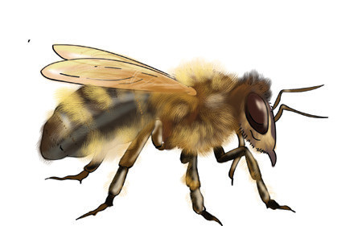
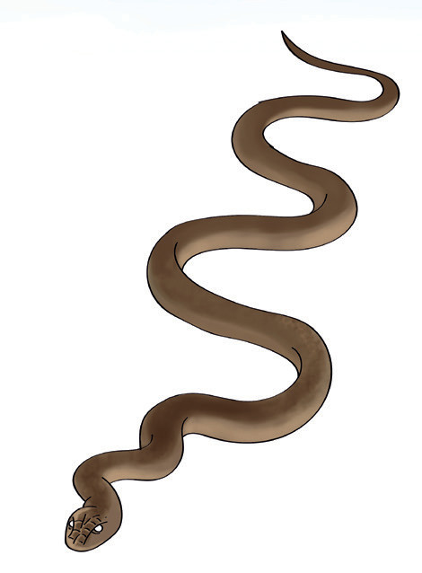
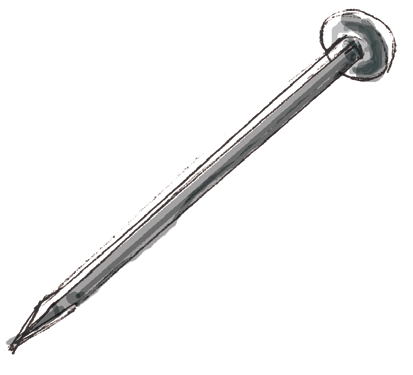
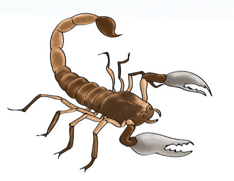

Vitu na viumbe hai hatari
Ni muhimu kuchukua tahadhari unapofanya uchunguzi katika mazingira. Hii ni kwa sababu baadhi ya viumbe hai wanauma na wana sumu kali. Vilevile, baadhi ya vitu vinachoma, vinaunguza, na hutoa harufu kali. Baadhi ya vitu na viumbe hai hatari vimeoneshwa katika Kielelezo namba 6.




Kielelezo namba 6: Vitu na viumbe hai hatari
Usalama wa mazingira
Mazingira salama kwa viumbe hai ni yale ambayo hayajaathiriwa kutoka katika uhalisia wake. Mazingira hayo hufanya viumbe hai waishi na kukua vizuri. Mazingira yasiyo salama kwa viumbe hai ni yale yaliyoathiriwa kutoka katika uhalisia wake. Mazingira hayo huathiri afya na ukuaji wa viumbe hai.
Mfano wa mazingira yanayofaa kwa ukuaji wa viumbe hai ni udongo, maji ya mito, maziwa na bahari. Pia, hewa ni muhimu kwa viumbe hai. Mazingira hayo yakiathiriwa huwa sio salama kwa viumbe hai.